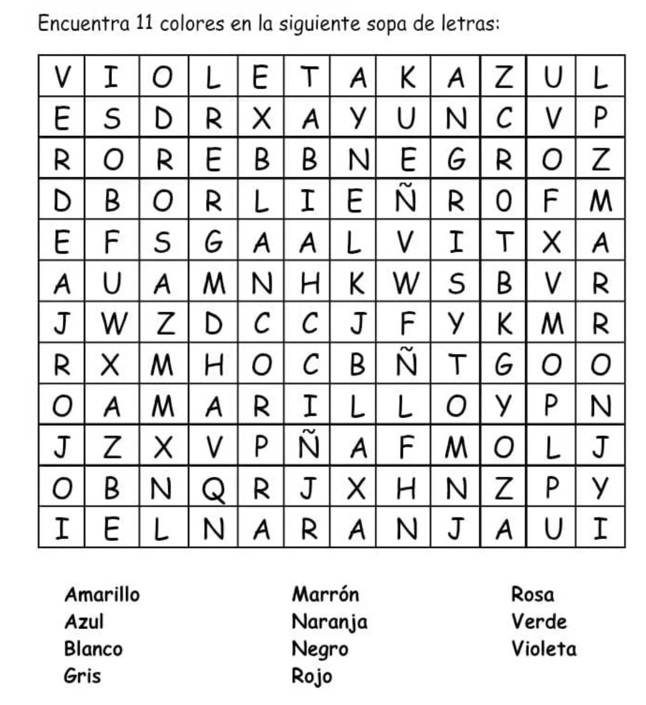
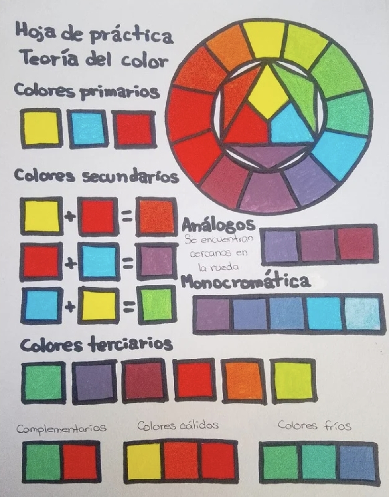

Los alumnos del plantel participaron en una actividad práctica en la materia de Diseño Digital, con el objetivo de comprender de manera dinámica la teoría del color y su aplicación en el ámbito visual.
Durante la sesión, los estudiantes trabajaron con pintura vinílica y realizaron mezclas de colores primarios: rojo, azul y amarillo para observar cómo se obtienen los colores secundarios y terciarios. Además, identificaron los colores cálidos y fríos, así como los colores complementarios dentro del círculo cromático.
La actividad permitió reforzar conceptos fundamentales como la armonía visual y el impacto emocional que los colores pueden generar en el diseño. A través de esta práctica, los alumnos no solo aprendieron teoría, sino que también experimentaron de forma artística, fomentando la creatividad y la percepción visual.


▲ Resultado de la actividad sobre la teoría del color realizada en la materia de Diseño Digital.